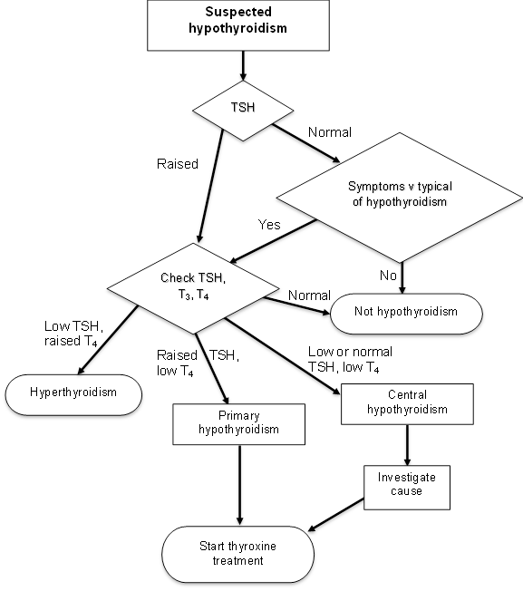
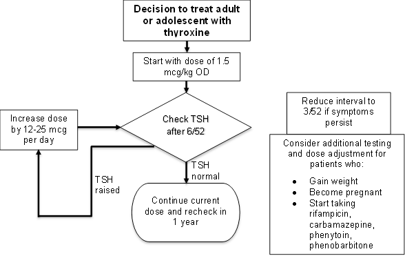

Hypothyroidism
Executive summary
Introduction
Hypothyroidism presents with non-specific symptoms and is rarely diagnosed in the Gambia. It is more common in women than in men.
It has major consequences on intellectual development and growth in infants and children (cause of cretinism). In adults, it may be the cause of heart disease and dementia. Once hypothyroidism has been diagnosed, in most cases, the patient will need to stay on thyroxine for the rest of their life.
Hypothyroidism should be considered as a possible cause of hypercholesteraemia, macrocytic anaemia, elevated CK and hyponatraemia.
Target users
· Nurses
· Doctors
Target area of use
· Outpatient department
· Ward
Key areas of focus / New additions / Changes
This guideline addresses the diagnosis and management of hypothyroidism.
Limitations
Investigation of central hypothyroidism is difficult as we have limited access to other hormone assays.
Presenting symptoms and signs
The symptoms of hypothyroidism are non-specific including:
· General body pain
· Tiredness
· Weakness
· Dry coarse skin
· Feeling cold
· Difficulty in concentration and poor memory
· Constipation
· Weight gain with poor appetite,
· Dyspnoea
· Hoarseness of voice,
· Menorrhagia (late oligo-menorrhea or amenorrhea)
· Paraesthesias
· Impaired hearing
· Myxoedema – cool peripheral extremities, puffy face, hands and feet
Congenital hypothyroidism presents in infants with lethargy, feeding problems, drowsiness, constipation, puffy facies, big tongue, large fontanelles, hypotonia, dry skin, hypothermia, prolonged jaundice. They may be big babies and there may be associated congenital malformations.
Examination findings
Signs of hypothyroidism include:
· Bradycardia (<60 per minute)
· Dry coarse skin
· Puffy face
· Pallor
· Hoarse voice
· Slow reflexes
· Goitre may be present
· Non-pitting edema (myxoedema)
· Pitting edema of lower extremities
· Hyporeflexia with delayed relaxation, ataxia, or both
· Cool peripheral extremities, puffy face, hands and feet
Investigations:
Thyroid function tests show either:
· High TSH in association with a low free T4 (primary hypothyroidism which is most common)
· Low (or sometimes normal) TSH in association with a low free T4 (central hypothyroidism suggesting a pituitary or hypothalamic problem).
Therefore request TSH only – if this is abnormal, the measurement should be repeated along with T3 and T4.
If the TSH is normal and the patient has very convincing symptoms of hypothyroidism such that central hypothyroidism is possible, then you may want to go ahead with a full set of thyroid function tests anyway.
CT scan of the head is indicated only if a pituitary cause is expected after doing establishing that there is a low or normal TSH and a low free T4.
See flow chart below.

Management
Treatment of primary and central hypothyroidism is with thyroxine (or levothyroxine). This is given once a day.
Usual adult requirements are 1.5 mcg/kg/day. This dose can be given immediately to most patients. A lower dose may be used and titrated up for those who have heart disease. The medication should be taken on an empty stomach and food should not be eaten for one hour after this.
Children clear T4 more rapidly than adults and need a higher dose:
|
Age |
Dose |
|
<1 year |
10-15 mcg/kg |
|
1-3 years |
4-6 mcg/kg |
|
3-10 years |
2-5 mcg/kg |
|
10-16 years |
2-4 mcg/kg |
Recheck TSH 6 weeks after starting treatment. If the TSH remains high, increase the dose by 12-25 mcg/day. Repeat this until the TSH is normal. If the patient is very symptomatic the interval may be reduced to 3 weeks. Most adult patients end up taking 100-150 mcg OD.
Symptom relief usually occurs about 3 to 6 months after normal TSH.
Once a patient is on a stable dose, the TSH can be measured once a year or when there is a change in symptoms. Patients who become pregnant, who gain weight or who start taking rifampicin, carbamazepine, phenytoin or phenobarbital may need their dose of thyroxine increasing.
Women of reproductive age should be euthyroid before conceiving, as the hypothyroidism is associated with abnormal neural development. The dose may be doubled during pregnancy and returned to the normal dose after delivery.
See flow chart on next page.
Children with congenital hypothyroidism need closer monitoring, to account for the changes that occur as they grow. The TSH should be checked every 2 weeks until it is normal, then every 3 months until age 3 years. After this it can be done 6-12 monthly until they stop growing.

References
Hypothyroidism. National Institute of Diabetes and Digestive and Kidney Diseases. March 2013. Archived from the original on 5 March 2016. Retrieved 10 June 2018.
Ferri, Fred F. Ferri's differential diagnosis : a practical guide to the differential diagnosis of symptoms, signs, and clinical disorders (2nd ed.). Philadelphia, PA: Elsevier/Mosby. 2010.
Ross 2017. Diagnosis of and screening for hypothyroidism in nonpregnant adults. UpToDate June 2017.
Ross 2017. Treatment of primary hypothyroidism in adults. UpToDate June 2017
LaFranchi 2017. Acquired hypothyroidism in childhood and adolescence. UpToDate June 2017.
LaFranchi 2017. Clinical features and detection of congenital hypothyroidism. UpToDate Jun 2017.
LaFranchi 2017. Treatment and prognosis of congenital hypothyroidism. UpToDate June 2017.
|
Written by: |
Name: Chibuike Okpara |
Date: 9 June 2018 |
|
Reviewed by: |
Name: Babatunde Awokola |
Date: 3 July 2018 |
|
Version: |
Change history: |
Review due date: |
|
1.0 |
New document |
|
|
2.0 |
Revised and transferred to new template |
31 July 2020 |
|
2.1 |
Executive summary added |
31 July 2020 |
|
Review Comments (if applicable) |
|
|